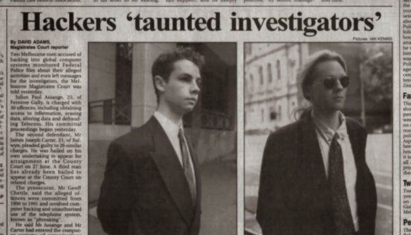

Every time we witness an injustice and do not act, we train our character to be passive in its presence and thereby eventually lose all ability to defend ourselves and those we love.
Cryptography is the ultimate form of non-violent direct action.
One of the best ways to achieve justice is to expose injustice.
You have to start with the truth. The truth is the only way that we can get anywhere. Because any decision-making that is based upon a lie or ignorance can't lead to a good conclusion.
Capable, generous men do not create victims, they nurture victims.
The internet has become a political space. I think that is one of the most important developments in the past decade.
Reality is an aspect of property. It must be seized. And investigative journalism is the noble art of seizing reality back from the powerful.
Where they couldn't pick holes in our arguments they would drive horses and carriages through my character.
The internet, our greatest tool of emancipation, has been transformed into the most dangerous facilitator of totalitarianism we have ever seen. The internet is a threat to human civilization.
Non-conformity is the only real passion worth being ruled by.
What we know is everything, it is our limit, of what we can be.
Big Brother is home. He is installed in the item you just dragged home from the Apple store.
-Eben Harrell in TIME Magazine, July 26, 2010
Early Life

Julian Paul Assange was born on 3 July 1971, in Townsville, Queensland, Australia. His parents, Christine Ann, a visual artist, and John Shipton, an anti-war activist and builder, had separated before Julian was born.
His mother married Richard Brett Assange when Julian was a year old. Richard was an actor who ran a small theatre company. The couple ran theatrical productions together and travelled frequently, taking Julian with them. He had lived in over 30 different towns and attended as many schools by the time he was in his mid-teens.
He developed a passion for computers and discovered that he was really skilled at hacking and breaking into computer systems. He began hacking under the name Mendax in 1987. Along with two of his friends he formed an ethical hacking group.
During this time he hacked into several U.S. Department of Defense facilities, the U.S. Navy, NASA, and Australia's Overseas Telecommunications Commission. He also hacked the websites of several prominent corporations and institutions like Citibank, Lockheed Martin, Motorola, Panasonic, Xerox, the Australian National University, La Trobe University, and Stanford University.
His hacking activities came to light in the early 1990s and he was eventually charged with 31 counts of hacking related crimes in 1994. He pleaded guilty to 25 charges in 1996 and got away with a fine.
He studied programming, mathematics, and physics at Central Queensland University and graduated in 1994.
Career
He embarked on a career as a programmer and software developer. In 1994 he started working on the Transmission Control Protocol scanner strobe.c which was completed in 1995. During this time he also worked on the open-source database PostgreSQL, Usenet caching software NNTPCache and the Rubberhose deniable encryption system.
He spent three years as a researcher working with the academic, Suelette Dreyfus, who was researching on the subversive side of the internet. Their intensive research culminated in the publication of 'Underground' (1997), a book about Australian hackers that became a bestseller in the computing fraternity.
Assange registered the domain leaks.org in 1999 and publicized a patent granted to the National Security Agency in August 1999 for voice-data harvesting technology. He felt that the common man should be concerned about the patent as it meant that everyone's overseas phone calls could be tapped by foreign spy agencies.
He enrolled at the University of Melbourne to study mathematics in 2003 but dropped out without completing his degree in 2006.
In 2006, he began working on WikiLeaks, a website intended to share secret information and news leaks on an international scale. The site was officially launched in 2007. Assange ran the site from Sweden, leveraging the country's strong laws protecting a person's anonymity.
Over the next few years Assange travelled extensively all over the world visiting countries in Africa, Asia, Europe and North America. During this time WikiLeaks released a U.S. military manual that provided detailed information on the Guantanamo detention center and shared emails from the vice presidential candidate, Sarah Palin.
Even though his initial reports generated some curiosity, he gained international attention in 2010 when WikiLeaks started publishing documents sent by Chelsea Manning. The Manning material included the Collateral Murder video (April 2010), the Afghanistan war logs (July 2010), the Iraq war logs (October 2010), and the Guantánamo files (April 2011).
After the publishing of the Manning material, U.S. authorities began investigating WikiLeaks and Assange. During this time the Swedish police was also interrogating him in connection with two sexual assault cases and a European Arrest Warrant was issued by Swedish authorities. Assange turned himself in to the London police.
He spent several months in house arrest in London and in June 2012 he sought refuge in the Ecuadorean embassy in London and was granted political asylum by the Ecuadorean government.
Major Works
Julian Assange is best known as the founder, editor-in-chief, and director of the website WikiLeaks which publishes secret information. He gained international prominence after the site published controversial documents and footage from the War in Afghanistan not previously available to the public. He received widespread support from several prominent personalities including the Brazilian President Luiz Inacio Lula da Silva and Russian Prime Minister Vladimir Putin.
Awards
He was presented with the Sam Adams Award in October 2010.
He won the Sydney Peace Foundation Gold Medal for Peace with Justice in February 2011. The same year he also won the Martha Gellhorn Prize for Journalism, Walkleys Award for Outstanding Contribution to Journalism and Voltaire Award of the Victorian Council for Civil Liberties.